대기환경기사 (2020-09-26 기출문제)
1과목: 대기오염 개론
1. 다음 중 대기층의 구조에 관한 설명으로 옳은 것은?
- 지상 80km 이상을 열권이라고 한다.
- 오존층은 주로 지상 약 30~45km에 위치한다.
- 대기층의 수직 구조는 대기압에 따라 4개층으로 나뉜다.
- 일반적으로 지상에서부터 상층 10~12km까지를 성층권이라고 한다.
(정답률: 69%)

2. 광화학적 산화제와 2차 대기오염물질에 관한 설명으로 옳지 않은 것은?
- 오존은 산화력이 강하므로 눈을 자극하고, 폐수종과 폐충혈 등을 유발시킨다.
- PAN은 강산화제로 작용하며, 빛을 흡수하여 가시거리를 증가시키며, 고엽에 특히 피해가 큰 편이다.
- 오존은 성숙한 잎에 피해가 크며, 섬유류의 퇴색작용과 직물의 셀룰로우스를 손상시킨다.
- 자외선이 강할 때, 빛의 지속시간이 긴 여름철에, 대기가 안정되었을 때 대기 중 광산화제의 농도가 높아진다.
(정답률: 67%)
3. 광화학오시던트 중 PAN에 관한 설명으로 옳은 것은?
- 분자식은 CH3COOONO2
- PBzN 보다 100배 정도 강하게 눈을 자극한다.
- 눈에는 자극이 없으나 호흡기 점막에는 강한 자극을 준다.
- 푸른색, 계란썪는 냄새를 갖는 기체로서 대기중에서 강산화제로 작용한다.
(정답률: 73%)
4. 최대에너지의 파장과 흑체 표면의 절대온도는 반비례함을 나타내는 법칙은?
- 플랑크 법칙
- 알베도의 법칙
- 비인의 변위법칙
- 스테판-볼츠만의 법칙
(정답률: 70%)
5. 온실효과에 관한 설명 중 가장 적합한 것은?
- 실제 온실에서의 보온작용과 같은 원리이다.
- 일산화탄소의 기여도가 가장 큰 것으로 알려져 있다.
- 온실효과 가스가 증가하면 대류권에서 적외선 흡수량이 많아져서 온실효과가 증대된다.
- 가스차단기, 소화기 등에 주로 사용되는 NO2는 온실효과에 대한 기여도가 CH4 다음으로 크다.
(정답률: 59%)
6. 대기압력이 950mb인 높이에서 공기의 온도가 -10℃일 때 온위(potential temperature)는? (단, θ=T(1000/P)0.288를 이용한다.)
- 약 267K
- 약 277K
- 약 287K
- 약 297K
(정답률: 70%)
7. 라돈에 관한 설명으로 가장 거리가 먼 것은?
- 무색, 무취의 기체로 액화되어도 색을 띠지 않는 물질이다.
- 공기보다 9배 정도 무거워 지표에 가깝게 존재한다.
- 주로 토양, 지하수, 건축자재 등을 통하여 인체에 영향을 미치고 있으며 흙속에서 방사선 붕괴를 일으킨다.
- 일반적으로 인체의 조혈기능 및 중추신경계통에 가장 큰 영향을 미치는 것으로 알려져 있으며, 화학적으로 반응성이 크다.
(정답률: 76%)
8. 건물에 사용되는 대리석, 시멘트 등을 부식시켜 재산상의 손실을 발생시키는 산성비에 가장 큰 영향을 미치는 물질로 옳은 것은?
- O3
- N2
- SO2
- TSP
(정답률: 78%)
9. 다음 중 염소 또는 염화수소 배출 관련업종으로 가장 거리가 먼 것은?
- 화학 공업
- 소다 제조업
- 시멘트 제조업
- 플라스틱 제조업
(정답률: 71%)
10. Richardson수(R)에 관한 설명으로 옳지 않은 것은?
- R=0은 대류에 의한 난류만 존재함을 나타낸다.
- 0.25＜R은 수직방향의 혼합이 거의 없음을 나타낸다.
- Richardson수(R)가 큰 음의 값을 가지면 바람이 약하게 되어 강한 수직운동이 일어난다.
- -0.03＜R＜0 기계적 난류와 대류가 존재하나 기계적 난류가 혼합을 주로 일으킴을 나타낸다.
(정답률: 72%)
11. 대기오염사건과 기온역전에 관한 설명으로 옳지 않은 것은?
- 로스앤젤레스 스모그사건은 광화학스모그의 오염형태를 가지며, 기상의 안정도는 침강역전 상태이다.
- 런던스모그 사건은 주로 자동차 배출가스 중의 질소산화물과 반응성 탄화수소에 의한 것이다.
- 침강역전은 고기압 중심부분에서 기층이 서서히 침강하면서 기온이 단열변화로 승온되어 발생하는 현상이다.
- 복사역전은 지표에 접힌 공기가 그보다 상공의 공기에 비하여 더 차가워져서 생기는 현상이다.
(정답률: 78%)
12. 온위(Potential temperature)에 대한 설명으로 옳은 것은?
- 환경감률이 건조 단열감률과 같은 기층에서는 온위가 일정하다.
- 환경감률이 습윤 단열감률과 같은 기층에서는 온위가 일정하다.
- 어떤 고도의 공기덩어리를 850mb 고도까지 건조단열적으로 옮겼을 때의 온도이다.
- 어떤 고도의 공기덩어리를 1000mb 고도까지 습윤단열적으로 옮겼을 때의 온도이다.
(정답률: 61%)
13. 다음 중 일반적으로 대도시의 산성강우 속에 가장 높은 농도로 존재할 것으로 예상되는 이온성분은? (단, 산성강우는 pH 5.6 이하로 본다.)
- K+
- F-
- Na+
- SO42-
(정답률: 69%)
14. 다음 중 CFC-12의 올바른 화학식은?
- CF3Br
- CF3Cl
- CF2Cl2
- CHFCl2
(정답률: 75%)
15. 다음 중 이산화탄소의 가장 큰 흡수원으로 옳은 것은?
- 토양
- 동물
- 해수
- 미생물
(정답률: 80%)
16. 충분히 발달된 지표경계층에서 측정된 평균풍속 자료가 아래 표와 같은 경우 마찰속도(u*)는? (단,
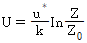
, Karman constant: 0.40)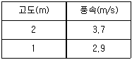
- 0.12m/s
- 0.46m/s
- 1.06m/s
- 2.12m/s
(정답률: 51%)
17. 대기환경보호를 위한 국제의정서와 설명의 연결이 옳지 않은 것은?
- 소피아 의정서 - CFC 감축의무
- 교토 의정서 - 온실가스 감축목표
- 몬트리올 의정서 - 오존층 파괴물질의 생산 및 사용의 규제
- 헬싱키 의정서 - 유황배출량 또는 국가간 이동량 최저 30% 삭감
(정답률: 57%)
18. 입자의 의한 산란에 관한 설명으로 옳지 않은 것은? (단, λ: 파장, D: 입자직경으로 한다.)
- 레일리산란은 D/λ가 10보다 클 때 나타나는 산란현상으로 산란광의 광도는 λ4에 비례한다.
- 맑은 하늘이 푸르게 보이는 까닭은 태양광선의 공기에 의한 레일리산란 때문이다.
- 레일리산란에 의해 가시광선 중에서는 청색광이 많이 산란되고, 적색광이 적게 산란된다.
- 입자의 크기가 빛의 파장과 거의 같거나 큰 경우에 나타나는 산란을 미산란이라고 한다.
(정답률: 63%)
19. 지표에 도달하는 일사량의 변화에 영향을 주는 요소와 가장 거리가 먼 것은?
- 계절
- 대기의 두께
- 지표면의 상태
- 태양의 입사각의 변화
(정답률: 73%)
20. 50m의 높이가 되는 굴뚝내의 배출가스 평균온도가 300℃, 대기온도가 20℃일 때 통풍력(mmH2O)은? (단, 연소가스 및 공기의 비중을 1.3kg/Sm3이라고 가정한다.)
- 약 15
- 약 30
- 약 45
- 약 60
(정답률: 55%)
2과목: 연소공학
21. 옥탄가(octane number)에 관한 설명으로 옳지 않은 것은?
- N-paraffine에서는 탄소수가 증가할수록 옥탄가가 저하하여 C7에서 옥탄가는 0이다.
- Iso-paraffine에서는 methyl측쇄가 많을수록, 특히 중앙부에 집중할수록 옥탄가는 증가한다.
- 방향족 탄화수소의 경우 벤젠고리의 측쇄가 C3까지는 옥탄가가 증가하지만 그 이상이면 감소한다.
- iso-octane과 n-octane, neo-octane의 혼합표준연료의 노킹정도와 비교하여 공급가솔린과 동등한 노킹정도를 나타내는 혼합표준연료 중의 iso-octane(%)를 말한다.
(정답률: 56%)
22. 증유에 관한 설명과 거리가 먼 것은?
- 점도가 낮을수록 유동점이 낮아진다.
- 잔류탄소의 함량이 많아지면 점도가 높게 된다.
- 점도가 낮은 것이 사용상 유리하고, 용적당 발열량이 적은 편이다.
- 인화점이 높은 경우 역화의 위험이 있으며, 보통 그 예열온도보다 약 2℃ 정도 높은 것을 쓴다.
(정답률: 56%)
23. 다음 중 화학적 반응이 항상 자발적으로 일어나는 경우는? (단, △G°는 Gibbs 자유에너지 변화량, △S°는 엔트로피 변화량, △H는 엔탈피 변화량이다.)
- △G°＜0
- △G°＞0
- △S°＜0
- △H＞0
(정답률: 59%)
24. 다음 중 석탄의 탄화도 증가에 따라 감소하는 것은?
- 비열
- 발열량
- 고정탄소
- 착화온도
(정답률: 64%)
25. 다음 중 NOx 발생을 억제하기 위한 방법으로 가장 거리가 먼 것은?
- 연료대체
- 2단 연소
- 배출가스 재순환
- 버너 및 연소실의 구조 개량
(정답률: 55%)
26. 액체연료의 연소장치에 관한 설명 중 옳은 것은?
- 건타입(gun type) 버너는 유압식과 공기분무식을 혼합한 것으로 유압이 30kg/cm2 이상으로 대형 연소장치이다.
- 저압기류 분무식 버너의 분무각도는 30~60°정도이고, 분무에 필요한 공기량은 이론연소 공기량의 30~50% 정도이다.
- 고압기류 분무식 버너의 분무각도는 70°이고, 유량조절 비가 1:3 정도로 부하변동 적응이 어렵다.
- 회전식 버너는 유압식 버너에 비해 연료유의 입경이 작으며, 직결식은 분무컵의 회전수가 전동기의 회전수보다 빠른 방식이다.
(정답률: 49%)
27. 다음 각종 연료성분의 완전연소 시 단위 체적당 고위발열량(kcal/Sm3)의 크기 순서로 옳은 것은?
- 일산화탄소＞메탄＞프로판＞부탄
- 메탄＞일산화탄소＞프로판＞부탄
- 프로판＞부탄＞메탄＞일산화탄소
- 부탄＞프로판＞메탄＞일산화탄소
(정답률: 67%)
28. 어떤 화학반응 과정에서 반응물질이 25% 분해하는데 41.3분 걸린다는 것을 알았다. 이 반응이 1차라고 가정할 때, 속도상수 k(s-1)는?
- 1.022×10-4
- 1.161×10-4
- 1.232×10-4
- 1.437×10-4
(정답률: 63%)
29. C:78(중량%), H:18(중량%), S:4(중량%)인 중유의 (CO2)max는? (단, 표준상태, 건조가스 기준으로 한다.)
- 약 13.4%
- 약 14.8%
- 약 17.6%
- 약 20.6%
(정답률: 51%)
30. 아래의 조성을 가진 혼합기체의 하한연소범위(%)는?
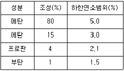
- 3.46
- 4.24
- 4.55
- 5.⑤
(정답률: 59%)
31. 중유를 시간당 1000kg씩 연소시키는 배출시설이 있다. 연돌의 단면적이 3m2 일 때 배출가스의 유속(m/s)은? (단, 이 중유의 표준상태에서의 원소 조성 및 배출가스의 분석치는 아래 표와 같고, 배출가스의 온도는 270℃이다.)
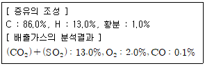
- 약 2.4
- 약 3.2
- 약 3.6
- 약 4.4
(정답률: 28%)
32. 저위발열량이 4900kcal/Sm3인 가스연료의 이론연소온도(℃)는? (단, 이론연소가스량: 10Sm3/Sm3, 기준온도: 15℃, 연료연소가스의 평균정압비열: 0.35kcal/Sm3ㆍ℃, 공기는 예열되지 않으며, 연소가스는 해리되지 않는 것으로 한다.)
- 1015
- 1215
- 1415
- 1615
(정답률: 60%)
33. 연료 연소 시 매연이 잘 생기는 순서로 옳은 것은?
- 타르 ＞ 중유 ＞ 경유 ＞ LPG
- 타르 ＞ 경유 ＞ 중유 ＞ LPG
- 중유 ＞ 타르 ＞ 경유 ＞ LPG
- 경유 ＞ 타르 ＞ 중유 ＞ LPG
(정답률: 68%)
34. 중유의 원소조성은 C: 88%, H: 12% 이다. 이 중유를 완전연소 시킨 결과, 중유 1kg당 건조 배기가스량이 15.8Sm3 이었다면, 건조 배기가스 중의 CO2의 농도(%)는?
- 10.4
- 13.1
- 16.8
- 19.5
(정답률: 46%)
35. 다음 각종 가스의 완전연소 시 단위부피당 이론공기량 (Sm3/Sm3)이 가장 큰 것은?
- Ethylene
- Methane
- Acetylene
- Propylene
(정답률: 65%)
36. 액화석유가스(LPG)에 대한 설명으로 옳지 않은 것은?
- 유황분이 적고 유독성분이 거의 없다.
- 천연가스에서 회수되기도 하지만 대부분은 석유정제 시 부산물로 얻어진다.
- 비중이 공기보다 가벼워 누출될 경우 인화 폭발 위험성이 크다.
- 사용에 편리한 기체연료의 특징과 수송 및 저장에 편리한 액체연료의 특징을 겸비하고 있다.
(정답률: 70%)
37. 메탄올 2.0kg을 완전 연소하는데 필요한 이론공기량(Sm3)은?
- 2.5
- 5.0
- 7.5
- 10.0
(정답률: 50%)
38. A석탄을 사용하여 가열로의 배출가스를 분석한 결과 CO2 14.5%, O2 6%, N2 79%, CO 0.5% 이었다. 이 경우의 공기비는?
- 1.18
- 1.38
- 1.58
- 1.78
(정답률: 57%)
39. 액체연료가 미립화 되는데 영향을 미치는 요인으로 가장 거리가 먼 것은?
- 분사압력
- 분사속도
- 연료의 점도
- 연료의 발열량
(정답률: 60%)
40. 연료의 종류에 따라 연소 특성으로 옳지 않은 것은?
- 기체연료는 부하의 변동범위(turn down ratio)가 좁고 연소의 조절이 용이하지 않다.
- 기체연료는 저발열량의 것으로 고온을 얻을 수 있고, 전열효율을 높일 수 있다.
- 액체연료의 경우 회분은 아주 적지만, 재 속의 금속산화물이 장해원인이 될 수 있다.
- 액체연료는 화재, 역화 등의 위험이 크며, 연소온도가 높아 국부적인 과열을 일으키기 쉽다.
(정답률: 61%)
3과목: 대기오염 방지기술
41. 다음 유해가스 처리에 관한 설명 중 가장 거리가 먼 것은?
- 시안화수소는 물에 대한 용해도가 매우 크므로 가스를 물로 세정하여 처리한다.
- 염화인(PCl3)은 물에 대한 용해도가 낮아 암모니아를 불어넣어 병류식 충전탑에서 흡수 처리한다.
- 아크로레인은 그대로 흡수가 불가능하며 NaClO 등의 산화제를 혼입한 가성소다 용액으로 흡수 제거한다.
- 이산화셀렌은 코트럴집진기로 포집, 결정으로 석출, 물에 잘 용해되는 성질을 이용해 스크러버에 의해 세정하는 방법 등이 이용된다.
(정답률: 56%)
42. 황함유량 2.5%인 중유를 30ton/h로 연소하는 보일러에서 배기가스를 NaOH 수용액으로 처리한 후 황성분을 전량 Na2SO3로 회수할 경우, 이 때 필요한 NaOH의 이론량(kg/h)은? (단, 황성분은 전량 SO2로 전환된다.)
- 1750
- 1875
- 1935
- 2015
(정답률: 50%)
43. 흡수장치에 사용되는 흡수액이 갖추어야 할 요건으로 옳은 것은?
- 용해도가 낮아야 한다.
- 휘발성이 높아야 한다.
- 부식성이 높아야 한다.
- 점성은 비교적 낮아야 한다.
(정답률: 65%)
44. 흡착과정에 대한 설명으로 옳지 않은 것은?
- 파과곡선의 형태는 흡착탑의 경우에 따라서 비교적 기울기가 큰 것이 바람직하다.
- 포화점에서는 주어진 온도와 압력조건에서 흡착제가 가장 많은 양의 흡착질을 흡착하는 점이다.
- 실제의 흡착은 비정상상태에서 진행되므로 흡착의 초기에는 흡착이 천천히 진행되다가 어느 정도 흡착이 진행되면 빠르게 흡착이 이루어진다.
- 흡착제층 전체가 포화되어 배출가스 중에 오염가스 일부가 남게 되는 점을 파과점이라 하고, 이점 이후부터는 오염가스의 농도가 급격히 증가한다.
(정답률: 62%)
45. 다음 발생 먼지 종류 중 일반적으로 S/Sb가 가장 큰 것은? (단, S는 진비중, Sb는 겉보기 비중이다.)
- 카본블랙
- 시멘트킬른
- 미분탄보일러
- 골재드라이어
(정답률: 69%)
46. 실내에서 발생하는 CO2의 양이 시간당 0.3m3일 때 필요한 환기량(m3/h)은? (단, CO2의 허용농도와 외기의 CO2농도는 각각 0.1%와 0.03%이다.)
- 약 145
- 약 210
- 약 320
- 약 430
(정답률: 27%)
47. 유량측정에 사용되는 가스 유속측정 장치 중 작동원리로 Bernoulli식이 적용되지 않는 것은?
- 로터미터(Rotameter)
- 벤튜리장치(Venturi meter)
- 건조가스장치(Dry gas meter)
- 오리피스장치(Orifice meter)
(정답률: 50%)
48. 배출가스의 온도를 냉각시키는 방법 중 열교환법의 특성으로 가장 거리가 먼 것은?
- 운전비 및 유지비가 높다.
- 열에너지를 회수할 수 있다.
- 최종 공기부피가 공기희석법, 살수법에 비해 매우 크다.
- 온도감소로 인해 상대습도는 증가하지만 가스 중 수분량에는 거의 변화가 없다.
(정답률: 45%)
49. 중력 집진장치의 효율을 향상시키는 조건에 대한 설명으로 옳지 않은 것은?
- 침강실 내의 배기가스 기류는 균일하여야 한다.
- 침강실의 침전높이가 작을수록 집진율이 높아진다.
- 침강실의 길이를 길게 하면 집진율이 높아진다.
- 침강실 내 처리가스 속도가 클수록 미세한 분진을 포집할 수 있다.
(정답률: 62%)
50. 여과 집진장치에 관한 설명으로 옳지 않은 것은?
- 폭발성, 점착성 및 흡습성 분진의 제거에 효과적이다.
- 탈진방식 중 간헐식은 여포의 수명이 연속식에 비해 길다.
- 탈진방식 중 간헐식은 진동형, 역기류형, 역기류진동형으로 분류할 수 있다.
- 여과재는 내열성이 약하므로 고온가스 냉각 시 산노점(dew point) 이상으로 유지해야 한다.
(정답률: 55%)
51. 입자상 물질에 관한 설명으로 가장 거리가 먼 것은?
- 직경 d인 구형입자의 비표면적(단위체적당 표면적)은 d/6이다.
- cascade impactor는 관성충돌을 이용하여 입경을 간접적으로 측정하는 방법이다.
- 공기동력학경은 stokes경과 달리 입자밀도를 1g/cm3 으로 가정함으로써 보다 쉽게 입경을 나타낼 수 있다.
- 비구형입자에서 입자의 밀도가 1보다 클 경우 공기동력학경은 stokes경에 비해 항상 크다고 볼 수 있다.
(정답률: 65%)
52. 어떤 집진장치의 입구와 출구의 함진가스의 분진농도가 7.5g/Sm3과 0.⑤5g/Sm3이었다. 또한 입구와 출구에서 측정한 분진시료 중 입경이 0~5μm인 입자의 중량분율은 전분진에 대하여 0.1과 0.5이었다면 0~5μm의 입경을 가진 입자의 부분 집진율(%)은?
- 약 87
- 약 89
- 약 96
- 약 98
(정답률: 49%)
53. 다음 [보기]가 설명하는 축류 송풍기의 유형으로 옳은 것은?
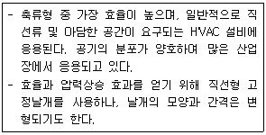
- 원통 축류형 송풍기
- 방사 경사형 송풍기
- 고정날개 축류형 송풍기
- 공기회전자 축류형 송풍기
(정답률: 65%)
54. 습식전기집진장치의 특징에 관한 설명 중 틀린 것은?
- 집진면이 청결하여 높은 전계 강도를 얻을 수 있다.
- 고저항의 먼지로 인한 역전리 현상이 일어나기 쉽다.
- 건식에 비하여 가스의 처리속도를 2배 정도 크게 할 수 있다.
- 작은 전기저항에 의해 생기는 먼지의 재비산을 방지할 수 있다.
(정답률: 61%)
55. 가로 a, 세로 b인 직사각형의 유로에 유체가 흐를 경우 상당직경(equivalent diameter)을 산출하는 간이식은?
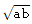
- 2ab
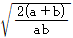
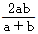
(정답률: 64%)
56. 배연탈황기술과 가장 거리가 먼 것은?
- 암모니아법
- 석회석 주입법
- 수소화 탈황법
- 활성산화 망간법
(정답률: 43%)
57. 벤튜리 스크러버의 액가스비를 크게 하는 요인으로 옳지 않은 것은?
- 먼지의 입경이 작을 때
- 먼지입자의 친수성이 클 때
- 먼지입자의 점착성이 클 때
- 처리가스의 온도가 높을 때
(정답률: 67%)
58. 압력손실이 250mmH2O 이고, 처리가스량 30000m3/h인 집진장치의 송풍기 소요동력(kW)은? (단, 송풍기의 효율은 80%, 여유율은 1.25이다.)
- 약 25
- 약 29
- 약 32
- 약 38
(정답률: 55%)
59. 집진장치의 압력손실이 400mmH2O, 처리가스량이 30000m3/h이고, 송풍기의 전압효율은 70%, 여유율이 1.2일 때 송풍기의 축동력(kW)은? (단, 1kW=102kgfㆍm/s이다.
- 36
- 56
- 80
- 95
(정답률: 56%)
60. 면적 1.5m2인 여과집진장치로 먼지농도가 1.5g/m3인 배기가스가 100m3/min으로 통과하고 있다. 먼지가 모두 여과포에서 제거되었으며, 집진된 먼지층의 밀도가 1g/cm3라면 1시간 후 여과된 먼지층의 두께(mm)는?
- 1.5
- 3
- 6
- 15
(정답률: 37%)
4과목: 대기오염 공정시험기준(방법)
61. 다음은 기체크로마토그램에서 피크(peak)의 분리정도를 나타낸 그림이다. 분리계수(d)와 분리도(R)를 구하는 식으로 옳은 것은?
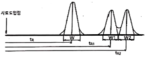
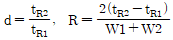
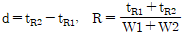
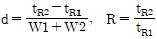
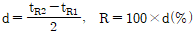
(정답률: 54%)
62. 배출허용기준 중 표준 산소농도를 적용받는 어떤 오염물질의 보정된 배출가스 유량이 50Sm3/day이었다. 이 때 배출가스를 분석하니 실측 산소농도는 5%, 표준 산소농도는 3%일 때, 측정되어진 실측 배출가스 유량(Sm3/day)은?
- 46.25
- 51.25
- 56.25
- 61.25
(정답률: 53%)
63. 원자흡수분광광도법의 장치 구성이 순서대로 옳게 나열된 것은?
- 광원부→파장선택부→측광부→시료원자화부
- 광원부→시료원자화부→파장선택부→측광부
- 시료원자화부→광원부→파장선택부→측광부
- 시료원자화부→파장선택부→광원부→측광부
(정답률: 55%)
64. 다음 중 물질을 취급 또는 보관하는 동안에 기체 또는 미생물이 침입하지 않도록 내용물을 보호하는 용기를 뜻하는 것은?
- 기밀용기
- 밀폐용기
- 밀봉용기
- 차과용기
(정답률: 56%)
65. 굴뚝 배출가스 중 먼지의 자동 연속 측정방법에서 사용하는 용어의 뜻으로 옳지 않은 것은?
- 검출한계는 제로드리프트의 2배에 해당하는 지시치가 갖는 교정용 입자의 먼지농도를 말한다.
- 응답시간은 표준교정판을 끼우고 측정을 시작했을 때 그 보정치의 90%에 해당하는 지시치를 나타낼 때까지 걸린 시간을 말한다.
- 교정용입자는 실내에서 감도 및 교정오차를 구할 때 사용하는 균일계 단분산 입자로서 기하평균 입경이 0.3~3μm인 인공입자로 한다.
- 시험가동시간이란 연속자동측정기를 정상적인 조건에서 운전할 때 예기치 않는 수리, 조정 및 부품교환 없이 연속가동 할 수 있는 최소시간을 말한다.
(정답률: 41%)
66. 자외선/가시선 분광분석 측정에서 최초광의 60%가 흡수되었을 때의 흡광도는?
- 0.25
- 0.3
- 0.4
- 0.6
(정답률: 53%)
67. 비분산적외선분광분석법에서 사용하는 주요 용어의 의미로 옳지 않은 것은?
- 스팬가스 : 분석계의 최저 눈금값을 교정하기 위하여 사용하는 가스
- 스팬 드리프트 : 측정기의 교정범위눈금에 대한 지시값의 일정시간 내의 변동
- 정필터형 : 측정성분이 흡수되는 적외선을 그 흡수파장에서 측정하는 방식
- 비교가스 : 시료셀에서 적외선 흡수를 측정하는 경우 대조가스로 사용하는 것으로 적외선을 흡수하지 않는 가스
(정답률: 58%)
68. 다음은 연소관식 공기법을 사용하여 유류 중 황함유량을 분석하는 방법이다. ( )안에 알맞은 것은?
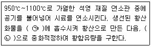
- ㉠ 수산화소듐, ㉡ 염산표준액
- ㉠ 염산, ㉡ 수산화소듐 표준액
- ㉠ 과산화수소(3%), ㉡ 수산화소듐 표준액
- ㉠ 싸이오시안산용액, ㉡ 수산화칼슘 표준액
(정답률: 63%)
69. 다음은 굴뚝 배출가스 중 황산화물의 중화적정법에 관한 설명이다. ( )안에 알맞은 것은?(관련 규정 개정전 문제로 여기서는 기존 정답인 4번을 누르면 정답 처리됩니다. 자세한 내용은 해설을 참고하세요.)
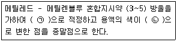
- ㉠ 에틸아민동용액, ㉡ 녹색에서 자주색
- ㉠ 에틸아민동용액, ㉡ 자주색에서 녹색
- ㉠ 0.1N 수산화소듐용액, ㉡ 녹색에서 자주색
- ㉠ 0.1N 수산화소듐용액, ㉡ 자주색에서 녹색
(정답률: 51%)
70. 다음 분석가스 중 아연아민착염용액을 흡수액으로 사용하는 것은?
- 황화수소
- 브롬화합물
- 질소산화물
- 포름알데히드
(정답률: 40%)
71. 다음 [보기]가 설명하는 굴뚝 배출가스 중의 산소측정방식으로 옳은 것은?
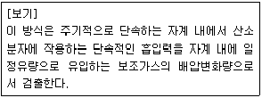
- 전극 방식
- 덤벨형 방식
- 질코니아 방식
- 압력검출형 방식
(정답률: 61%)
72. 굴뚝 배출가스 중 총탄화수소 측정을 위한 장치 구성조건 등에 관한 설명으로 옳지 않은 것은?
- 기록계를 사용하는 경우에는 최소 4회/분이 되는 기록계를 사용한다.
- 총탄화수소분석기는 흡광차분광방식 또는 비불꽃(non flame)이온크라마토그램방식의 분석기를 사용하며 폭발위험이 없어야 한다.
- 시료채취관은 스테인리스강 또는 이와 동등한 재질의 것으로 하고 굴뚝중심 부분의 10%범위 내에 위치할 정도의 길이의 것을 사용한다.
- 영점가스로는 총탄화수소농도(프로판 또는 탄소등가 농도)가 0.1mL/m3 이하 또는 스팬값이 0.1% 이하인 고순도 공기를 사용한다.
(정답률: 38%)
73. 배출가스 중 먼지를 여과지에 포집하고 이를 적당한 방법으로 처리하여 분석용 시험용액으로 한 후 원자흡수분광광도법을 이용하여 각종 금속원소의 원자흡광도를 측정하여 정량분석 하고자 할 때, 다음 중 금속원소별 측정파장으로 옳게 짝지어진 것은?
- Pb - 357.9nm
- Cu - 228.2nm
- Ni - 283.3nm
- Zn - 213.8nm
(정답률: 55%)
74. 굴뚝 배출가스 중 질소산화물의 연속 자동측정법으로 옳지 않은 것은?
- 화학발광법
- 용액전도율법
- 자외선흡수법
- 적외선흡수법
(정답률: 40%)
75. 대기오염공정시험기준상 자외선/가시선 분광법에서 사용되는 흡수셀의 재질에 따른 사용 파장범위로 가장 적합한 것은?
- 플라스틱제는 자외부 파장범위
- 플라스틱제는 가시부 파장범위
- 유리제는 가시부 및 근적외부 파장범위
- 석영제는 가시부 및 근적외부 파장범위
(정답률: 54%)
76. 보통형(I형) 흡입노즐을 사용한 굴뚝 배출가스 흡입 시 10분간 채취한 흡입가스량(습식가스미터에서 읽은 값)이 60L이었다. 이 때 등속흡입이 행하여지기 위한 가스미터에 있어서의 등속흡입유량(L/min)의 범위는? (단, 등속흡입 정도를 알기 위한 등속흡입계수
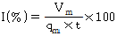
이다.)(관련 규정 개정전 문제로 여기서는 기존 정답인 2번을 누르면 정답 처리됩니다. 자세한 내용은 해설을 참고하세요.)- 3.3~5.3
- 5.5~6.3
- 6.5~7.3
- 7.5~8.3
(정답률: 56%)
77. 기체-액체 크로마토그래피에서 사용되는 고정상액체(Stationary Liquid)의 조건으로 옳은 것은?
- 사용온도에서 증기압이 낮고, 점성이 작은 것이어야 한다.
- 사용온도에서 증기압이 낮고, 점성이 큰 것이어야 한다.
- 사용온도에서 증기압이 높고, 점성이 작은 것이어야 한다.
- 사용온도에서 증기압이 높고, 점성이 큰 것이어야 한다.
(정답률: 49%)
78. 흡광차분광법을 사용하여 아황산가스를 분석할 때 간섭성분으로 오존(O3)이 존재할 경우 다음 조건에 따른 오존의 영향(%)을 산출한 값은?
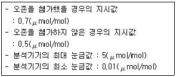
- 1
- 2
- 3
- 4
(정답률: 32%)
79. 굴뚝 배출가스 중의 황화수소를 아이오딘 적정법으로 분석하는 방법에 관한 설명으로 거리가 먼 것은?(관련 규정 개정전 문제로 여기서는 기존 정답인 1번을 누르면 정답 처리됩니다. 자세한 내용은 해설을 참고하세요.)
- 다른 산화성 및 환원성 가스에 의한 방해는 받지 않는 장점이 있다.
- 시료 중의 황화수소를 염산산성으로 하고, 아이오딘 용액을 가하여 과잉의 아이오딘을 싸이오황산소듐 용액으로 적정한다.
- 시료 중의 황화수소가 100~2000ppm 함유되어 있는 경우의 분석에 적합한 시료채취량은 10~20L, 흡입속도는 1L/min 정도이다.
- 녹말 지시약(질량분율 1%)은 가용성 녹말 1g을 소량의 물과 섞어 끊는 물 100mL 중에 잘 흔들어 섞으면서 가하고, 약 1분간 끓인 후 식혀서 사용한다.
(정답률: 39%)
80. 자외선/가시선 분광법에 의한 불소화합물 분석방법에 관한 설명으로 옳지 않은 것은?
- 분광광도계로 측정 시 흡수 파장은 460nm를 사용한다.
- 이 방법의 정량범위는 HF로서 0.⑤ppm~1200ppm이며, 방법검출한계는 0.015ppm이다.
- 시료가스 중에 알루미늄(III), 철(II), 구리(II), 아연(II) 등의 중금속 이온이나 인산 이온이 존재하면 방해 효과를 나타낸다.
- 굴뚝에서 적절한 시료채취장치를 이용하여 얻은 시료 흡수액을 일정량으로 묽게 한 다음 완충액을 가하여 pH를 조절하고 란탄과 알리자린콤플렉손을 가하여 생성되는 생성물의 흡광도를 분광광도계로 측정한다.
(정답률: 37%)
5과목: 대기환경관계법규
81. 다음은 대기환경보전법령상 환경기술인에 관한 사항이다. ( )안에 알맞은 것은?
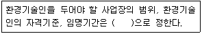
- 시ㆍ도지사령
- 총리령
- 환경부령
- 대통령령
(정답률: 51%)
82. 대기환경보전법령상 자동차 연료(휘발유)의 제조기준 중 벤젠 함량(부피 %) 기준으로 옳은 것은?
- 1.5 이하
- 1.0 이하
- 0.7 이하
- 0.0013 이하
(정답률: 53%)
83. 대기환경보전법령상 먼지ㆍ황산화물 및 질소산화물의 연간 발생량 합계가 18톤인 배출구의 자가측정횟수 기준은? (단, 특정대기유해물질이 배출되지 않으며, 관제센터로 측정결과를 자동전송하지 않는 사업장의 배출구이다.)
- 매주 1회 이상
- 매월 2회 이상
- 2개월마다 1회 이상
- 반기마다 1회 이상
(정답률: 49%)
84. 대기환경보전법령상 배출시설 설치허가 신청서 또는 배출시설 설치신고서에 첨부하여야 할 서류가 아닌 것은?
- 원료(연료를 포함한다)의 사용량 및 제품 생산량을 예측한 명세서
- 배출시설 및 방지시설의 설치명세서
- 방지시설의 상세 설계도
- 방지시설의 연간 유지관리 계획서
(정답률: 45%)
85. 다음은 대기환경보전법령상 환경부령으로 정하는 첨가제 제조기준에 맞는 제품의 표시방법이다. ( )안에 알맞은 것은?
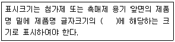
- 100분의 10 이상
- 100분의 20 이상
- 100분의 30 이상
- 100분의 50 이상
(정답률: 65%)
86. 대기환경보전법령상 기관출력이 130kW 초과인 선박의 질소산화물 배출기준(g/kWh)은? (단, 정격 기관속도 n(크랭크샤프트의 분당 속도)이 130rpm 미만이며 2011년 1월 1일 이후에 건조한 선박의 경우이다.)
- 17 이하
- 44.0×n(-0.23) 이하
- 7.7 이하
- 14.4 이하
(정답률: 36%)
87. 대기환경보전법령상 대기오염도 검사기관과 거리가 먼 것은?
- 수도권대기환경청
- 환경보전협회
- 한국환경공단
- 유역환경청
(정답률: 67%)
88. 대기환경보전법령상 청정연료를 사용하여야 하는 대상시설의 범위에 해당하지 않는 시설은?
- 산업용 열병합 발전시설
- 전체보일러의 시간당 총 증발량이 0.2톤 이상인 업무용보일러
- 「집단에너지사업법 시행령」에 따른 지역냉난방사업을 위한 시설
- 「건축법 시행령」에 따른 중앙집중난방방식으로 열을 공급받고 단지 내의 모든 세대의 평균 전용면적이 40.0m2를 초과하는 공동주택
(정답률: 60%)
89. 대기환경보전법령상 벌칙기준 중 7년 이하의 징역이나 1억원 이하의 벌금에 처하는 것은?
- 대기오염물질의 배출허용기준 확인을 위한 측정기기의 부착 등의 조치를 하지 아니한 자
- 황연료사용 제한조치 등의 명령을 위반한 자
- 제작자 배출허용기준에 맞지 아니하게 자동차를 제작한 자
- 배출가스 전문정비사업자로 등록하지 아니하고 정비ㆍ점검 또는 확인검사 업무를 한 자
(정답률: 64%)
90. 대기환경보전법령상 가스형태의 물질 중 소각용량이 시간당 2톤(의료폐기물 처리시설은 시간당 200kg) 이상인 소각처리시설에서의 일산화탄소 배출허용기준(ppm)은? (단, 각 보기항의 ( )안의 값은 표준산소농도(O2의 백분율)를 의미한다.)
- 30(12) 이하
- 50(12) 이하
- 200(12) 이하
- 300(12) 이하
(정답률: 41%)
91. 대기환경보전법령상 환경부장관이 특별대책지역의 대기오염 방지를 위하여 필요하다고 인정하면 그 지역에 새로 설치되는 배출시설에 대해 정할 수 있는 기준은?
- 일반배출허용기준
- 특별배출허용기준
- 심화배출허용기준
- 강화배출허용기준
(정답률: 67%)
92. 대기환경보전법령상 대기오염 경보단계 중 오존에 대한 “경보”해제기준과 관련하여 ( )안에 알맞은 것은?
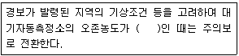
- 0.1ppm 이상 0.3ppm 미만
- 0.1ppm 이상 0.5ppm 미만
- 0.12ppm 이상 0.3ppm 미만
- 0.12ppm 이상 0.5ppm 미만
(정답률: 58%)
93. 다음은 대기환경보전법령상 기본부과금 부과대상 오염물질에 대한 초과배출량 산정방법 중 초과배출량 공제분 산정방법이다. ( )안에 알맞은 것은?
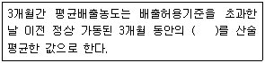
- 5분 평균치
- 10분 평균치
- 30분 평균치
- 1시간 평균치
(정답률: 55%)
94. 다음은 악취방지법령상 악취검사기관의 준수사항에 관한 내용이다. ( )안에 알맞은 것은?
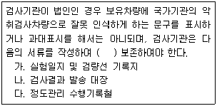
- 1년간
- 2년간
- 3년간
- 5년간
(정답률: 59%)
95. 다음 중 대기환경보전법령상 초과부과금 산정기준에 따른 오염물질 1킬로그램당 부과금액이 가장 높은 것은?
- 질소산화물
- 황화수소
- 이황화탄소
- 시안화수소
(정답률: 59%)
96. 환경정책기본법령상 미세먼지(PM-10)의 대기 환경기준은? (단, 연간평균치 기준이다.)
- 10μg/m3 이하
- 25μg/m3 이하
- 30μg/m3 이하
- 50μg/m3 이하
(정답률: 59%)
97. 실내공기질 관리법령상 신축 공동주택의 실내공기질 권고기준으로 옳은 것은?
- 스티렌 360μg/m3 이하
- 폼알데하이드 360μg/m3 이하
- 자일렌 360μg/m3 이하
- 에틸벤젠 360μg/m3 이하
(정답률: 61%)
98. 악취방지법령상 위임업무 보고사항 중 “악취검사기관의 지도ㆍ점검 및 행정처분 실적” 보고횟수 기준은?
- 연 1회
- 연 2회
- 연 4회
- 수시
(정답률: 41%)
99. 다음은 대기환경보전법령상 운행차정기검사의 방법 및 기준에 관한 사항이다. ( )안에 알맞은 것은?
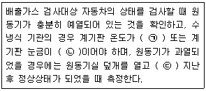
- ㉠ 25℃ 이상, ㉡ 1/10 이상, ㉢ 1분 이상
- ㉠ 25℃ 이상, ㉡ 1/10 이상, ㉢ 5분 이상
- ㉠ 40℃ 이상, ㉡ 1/4 이상, ㉢ 1분 이상
- ㉠ 40℃ 이상, ㉡ 1/4 이상, ㉢ 5분 이상
(정답률: 52%)
100. 악취방지법령상 지정악취물질이 아닌 것은?
- 아세트알데하이드
- 메틸메르캅탄
- 톨루엔
- 벤젠
(정답률: 57%)